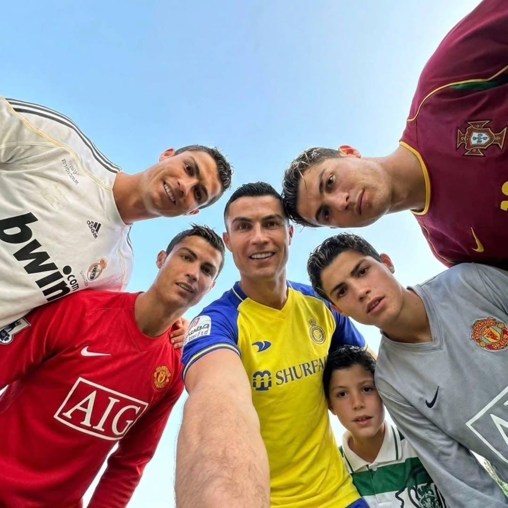
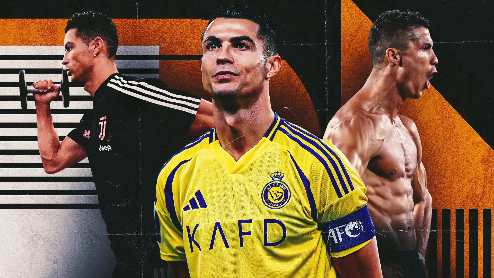

BIOGRAFIA
Cristiano Ronaldo dos Santos Aveiro nasceu em 5 de fevereiro de 1985, na cidade do Funchal, na Ilha da Madeira, Portugal.
Desde criança, Cristiano demonstrava grande interesse pelo futebol. Começou sua formação no Andorinha e depois passou pelo Nacional, até chegar ao Sporting Clube de Portugal.
Em 2003, chamou a atenção do Manchester United, onde começou a ganhar destaque internacional. No clube inglês, conquistou importantes títulos e desenvolveu-se como um dos grandes jogadores de sua geração.
Depois, Cristiano Ronaldo jogou pelo Real Madrid, Juventus e novamente pelo Manchester United. Também construiu uma carreira marcante pela Seleção Portuguesa.
Conhecido por sua velocidade, força física, habilidade e capacidade de marcar gols, tornou-se uma das maiores referências do futebol mundial.


CARREIRA
- Sporting CP (2002 - 2003)
- Manchester United (2003 - 2009)
- Real Madrid (2009 - 2018)
- Juventus (2018 - 2021)
- Manchester United (2021 - 2022)
- Al-Nassr (2023 - Atual)
- Seleção Portuguesa
PRINCIPAIS CONQUISTAS
- 🏆 5 Bolas de Ouro
- 🏆 5 títulos da Liga dos Campeões
- 🏆 Campeão da Eurocopa com Portugal
- 🏆 Campeão da Liga das Nações
- 🏆 Vários títulos nacionais
- 🏆 Artilharias e recordes individuais